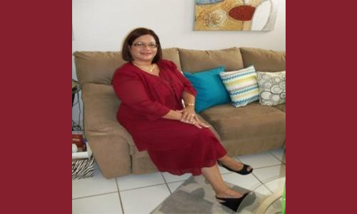

Gabriel Lasanta
Miembro de una familia puertorriqueña y panameña. Realizó estudios de bachillerato en Educación Secundaria con especialidad en Historia y Estudios Sociales en la Universidad de Puerto Rico, Recinto de Rio Piedras en el año 2013. Posee dos licencias expedidas por el Departamento de Educación, una en Historia y otra en Estudios Sociales. Sus destrezas como líder y compromiso social, le merecieron la dedicatoria de la graduación de sus estudiantes de duodécimo grado en el año 2015. Hasta el presente ha enseñado distintas disciplinas relacionadas al campo de la Historia y los Estudios Sociales: Sociología, Economía, Ética Social, Historia en Contexto, Historia de Puerto Rico, Historia de Estados Unidos e Historia de Latinoamérica. Completó su Maestría con honores en el 2018; adquiriendo dominio teórico y práctico de los distintos diseños curriculares en Historia y Estudios Sociales. Su tesis de investigación, titulada Currículo Oculto y dialogicidad crítica: instrumentos para comprender las relaciones de poder dentro de la escuela pública fue distinguida en los Actos de Logros y Excelencia Académica de la Facultad de Educación del Recinto UPR en Rio Piedras en diciembre del año 2018. Luego la misma fue presentada en Cuba, en el prestigioso Encuentro Pedagógico Cuba 2019, donde obtuvo dos certificaciones y 9 créditos de formación profesional. Su compromiso con el magisterio lo ha vinculado con proyectos relacionados a la Educación y transformación social-comunitaria, funge como activista y delegado sindical de la Federación de Maestr@s de Puerto Rico, una de sus tareas es coordinar actividades de formación pedagógica-sindical. Además, es miembro del comité timón del Movimiento Al Rescate De Mi Escuela, agrupación que rescata escuelas declaradas en desuso.
Alechca Hernández
Tengo un bachillerato en Salud Escolar de la Universidad Interamericana de Puerto Rico. Comencé en el Departamento de Educación en el año 2010. Ofrezco cursos de Salud Escolar, Sexualidad y Nutrición. Por el momento soy la maestra consejera del Club de Enfermería. Este año (2019) por primera vez se pudo realizar la Feria de Salud en la escuela donde se pudo impactar los estudiantes, maestros y la comunidad.

Nilza E. Mojica Cruz
Soy Profesora de Español Secundario. Poseo Doctorado en Filosofía y Letras del Centro de Estudios Avanzado de Puerto Rico y el Caribe. Mi tesis doctoral tiene por título El hablante lírico en el lenguaje metafórico de Angelamaría Dávila Malavé. Actualmente, ostento las siguientes certificaciones: Maestra de Español-nivel secundario (Vitalicio), Maestra de Nivel Elemental, Facilitador Docente de Español, Directora Escolar K-12 y Especialista en Currículo de Español del Departamento de Educación. He sido educadora por veintiocho años y seis meses en el Departamento de Educación. Imparto los cursos de Español Avanzado a los jóvenes de duodécimo y Español Regular a los de undécimo grado. En años anteriores, he coordinado la revista Literamundi con estudiantes y exalumnos de la escuela. Asimismo, he dirigido el proyecto especial de Fotoperiodismo. Esto con el fin de publicar el periódico escolar Tu momento social y en estos momentos se reconoce como Tu periódico líder.
Profa. Peggy S. Nieto
La Profa. Peggy Nieto posee un Bachillerato en Ingles de la Universidad de Puerto Rico, Recinto de Cayey, una Maestría en Currículo e Instrucción en Inglés, una Maestría en Administración Escolar y 62 créditos a nivel Doctoral en liderazgo, Currículo e Instrucción de la Universidad de Phoenix.Ella posee Certificación e Licencias en: Maestra Ingles Elemental, Maestra Ingles Superior, Maestra de Escuela Elemental, Especialista de Currículo y Facilitadora Docente de Ingles.Ella ha trabajado en el Departamento de Educación de PR por 28 años, de los cuales, estuvo de Directora Escolar por tres años de esta su Escuela Adolfina Irizarry de Puig. Ha trabajado desde kinder a nivel universitario. La Profa. Peggy Nieto se destaca actualmente como maestra de Inglés de duodécimo y noveno grado y es ademas la consejera docente del Consejo de Estudiantes.
Nedynia López Correa
Estudié un Bachillerato en Lenguas Modernas con un minor en Inglés en la Universidad de Puerto Rico, Río Piedras. Obtuve luego la certificación como maestra en la Universidad de PR de Cayey. Hice una maestría en la enseñanza del inglés como segundo idioma en la Universidad de Phoenix, Guaynabo PR. Tengo 27 años como maestra en el Departamento de Educación. Realmente tengo 30 años como maestra porque trabajé tres años anteriormente con el Instituto de Banca. Tengo además un Grado Asociado en Teología y sigo estudiando.

Cristina A. Rivera Álvarez
Estudié un Bachillerato en Lenguas Modernas con un minor en Inglés en la Universidad de Puerto Rico, Río Piedras. Obtuve luego la certificación como maestra en la Universidad de PR de Cayey. Hice una maestría en la enseñanza del inglés como segundo idioma en la Universidad de Phoenix, Guaynabo PR. Tengo 27 años como maestra en el Departamento de Educación. Realmente tengo 30 años como maestra porque trabajé tres años anteriormente con el Instituto de Banca. Tengo además un Grado Asociado en Teología y sigo estudiando.
Ana Roman
Ella trabaja en la escuela Adolfina Irizarry de Puig.
Graduada de la U PR de Carolina de sistema de oficina
y 30 crédito en educación y 30 en matemática de la
UPR de Río Piedras. Posee licencia en matemática y
educación comercial. Con 22 años de experiencias.
Sonia E. Escalera Flores
Estudió en las escuelas Luis M. Santiago, José Nevárez Landron, Adolfina Irizarry de Puig. A la edad de nueve años comenzó a practicar el deporte de atletismo siendo el
800 metros su evento preferido. dado a su dedicación se ganó el premio de campeona nacional juvenil
de PR, campeona centroamericana y del Caribe. Obtuvó una beca universitaria de Sagrado Corazón
donde compitió y ganó los eventos en los 4 años de las Justas Universitarias. Completó su bachillerato
en ciencias del ejercicio y promoción de la salud. Se desempeño se en cómo evaluar fisico en gimnasios
del área metropolitana. Luego realizó cursos contundentes para obtener la licencia de maestra en la
materia de salud escolar y educación física. Actualmente forma parte de la asociación de árbitros de
atletismo del norte.
Sara N. Bonilla López
Hola quiero que conozcas a la maestra Sara N. Bonilla Lopez de la Escuela Adolfina Irizarry de Puig desde 2016 hasta en estos momentos. La profesora estudió educación secundaria en la materia de español en la American University of Puerto Rico en Hato Tejas, Bayamón. Ella tiene 47 años, es hija de un pastor retirado, y tuvó la bendición hace 30 años haber estudiado en la misma escuela que trabaja. He tenido la oportunidad de trabajar en dos escuelas anteriores. La primera escuela fue Marcelino Canino Canino en el barrio Maguayo en Dorado y la segunda fue Pedro Lopez Canino en el barrio Espinosa en Dorado. Donde participó en varias actividades de esas escuelas. He tenido mas oportunidad de ser líder en la iglesia y a nivel nacional de mi concilio evangelico, el movimiento Defensores de Fe Cristiana. La profesora lleva 18 años en el Departamento de Educación.